mould
diffusion limited aggregation in 3d
waterfall
 introducing disorder to 1D cellular automaton
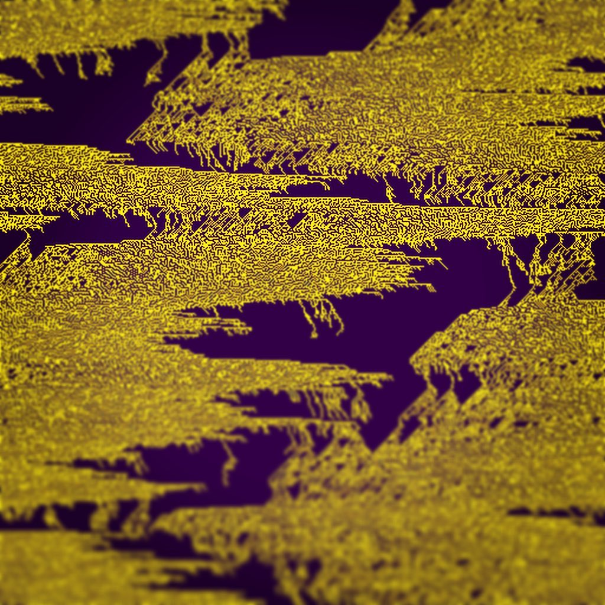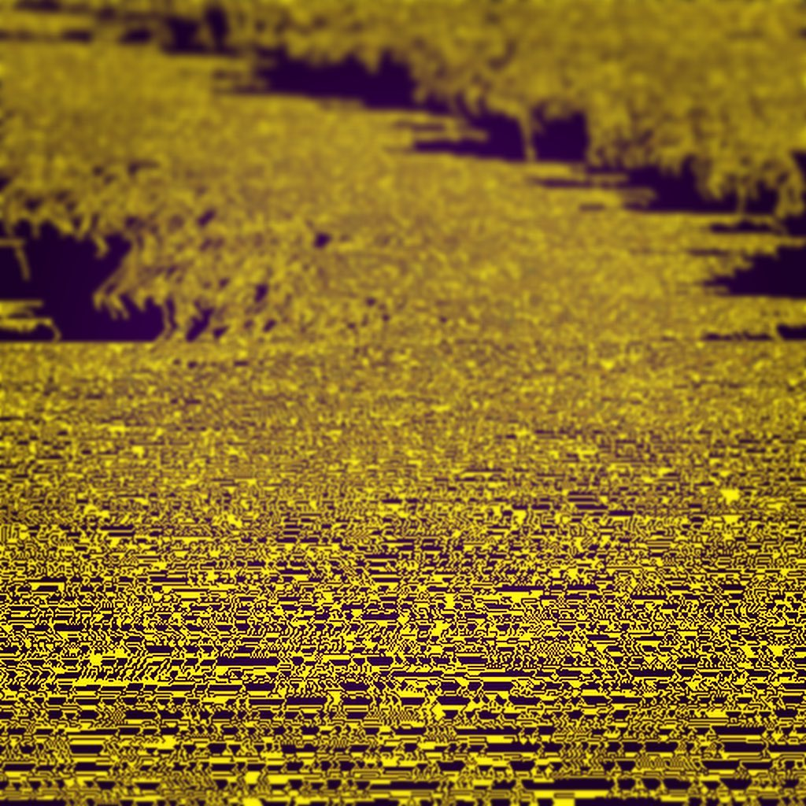
introducing disorder to 1D cellular automaton
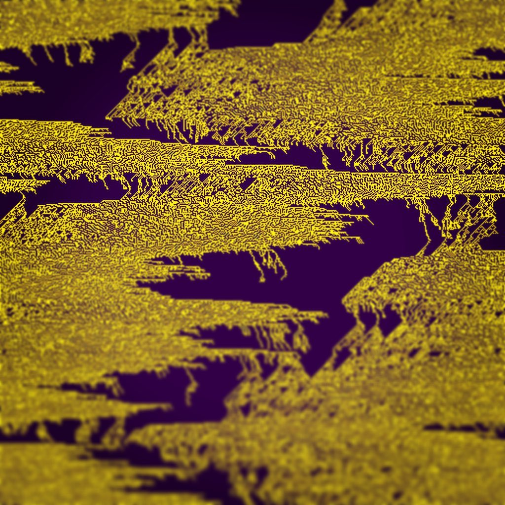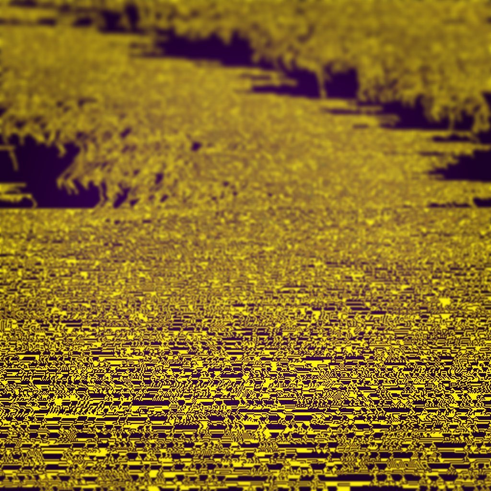
henge
chorus
audio experiment
rbt
extruding 2d perlin noise to produce 3d objects
forest
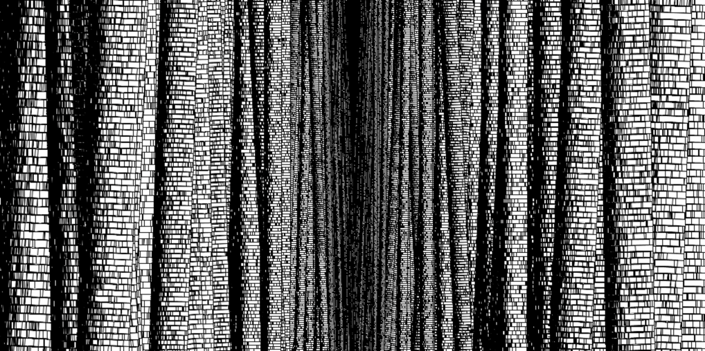
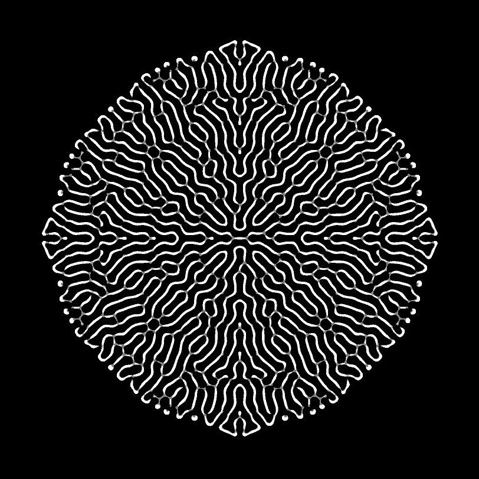
two cats
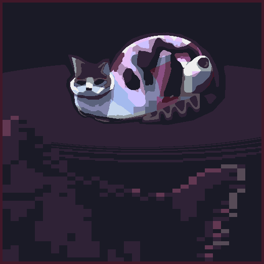
hlíepfrogge map
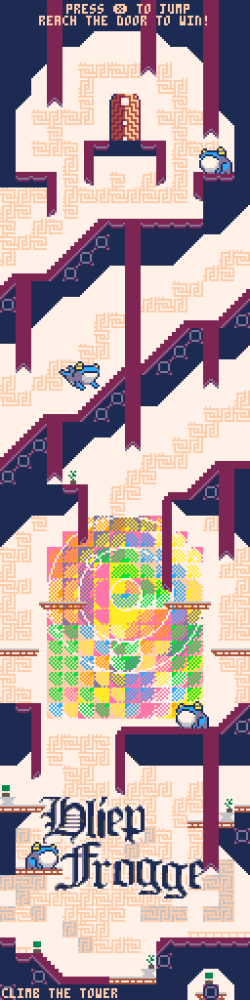
portrait
industry
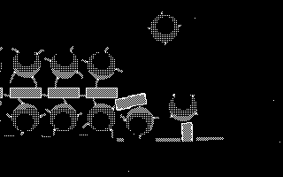
waluigi devours his rival
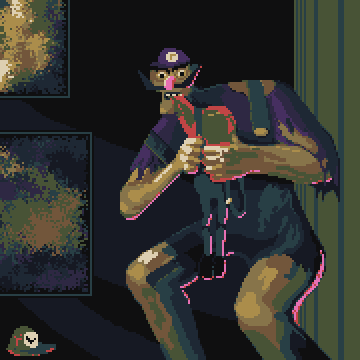
An analysis of bert vector embeddings and their efficacy for predicting the speaker of a line from a corpus of transcripts. They are compared with the simpler approach of using TF-IDF vectors.
Interpreting a DQN Connect 4 Agent
Training an agent to self-play Connect 4 and then visualising the gradients during play.
Tree SHAP for Exploratory Data Analysis
Using the tree SHAP visualisation library to gain insight from a decision tree about the data set it was trained on.
Auto-Trading Agent with Deep Q Networks
Training a DQN agent to trade on a stochastic stock (and how the agent learned to abuse a bug in it's environment).
Visually Comparing the London Housing Market to Monopoly
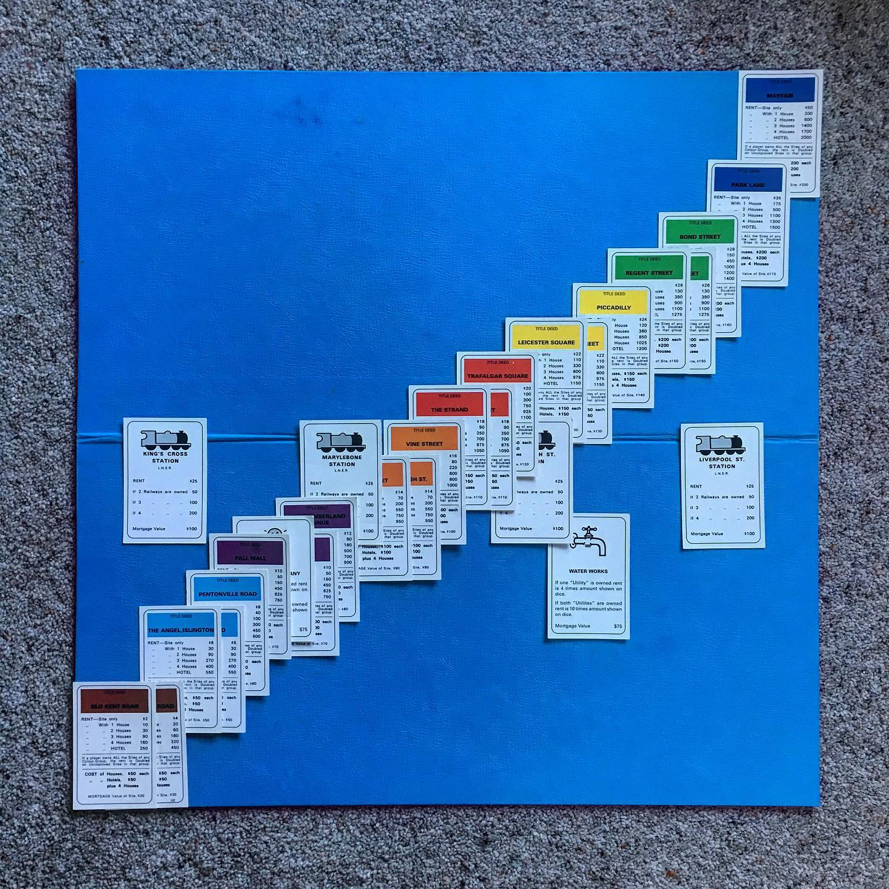 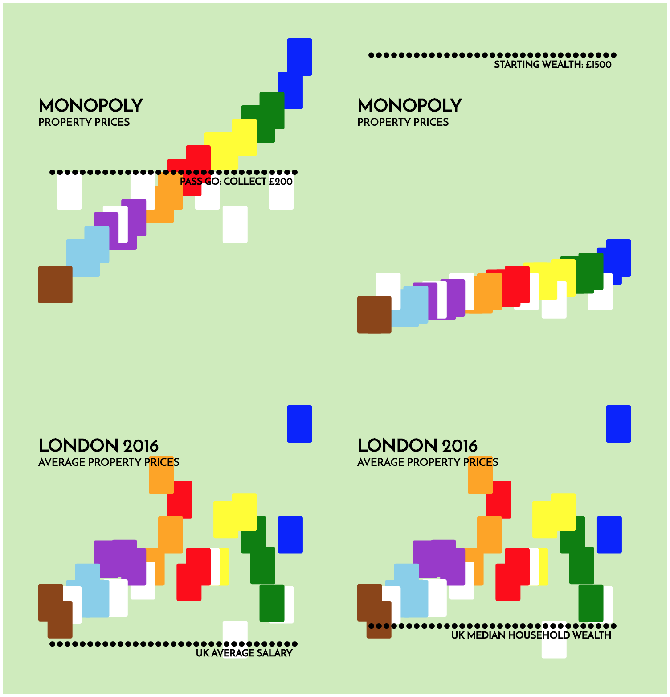
DELIVER US 2 EVIL and xxBMXxx
two 'anti-games' produced in a 48 hour window in Unity3d
the former was done as part of Ludum Dare 44 and placed 44th out of 2538 entries in the Humor category